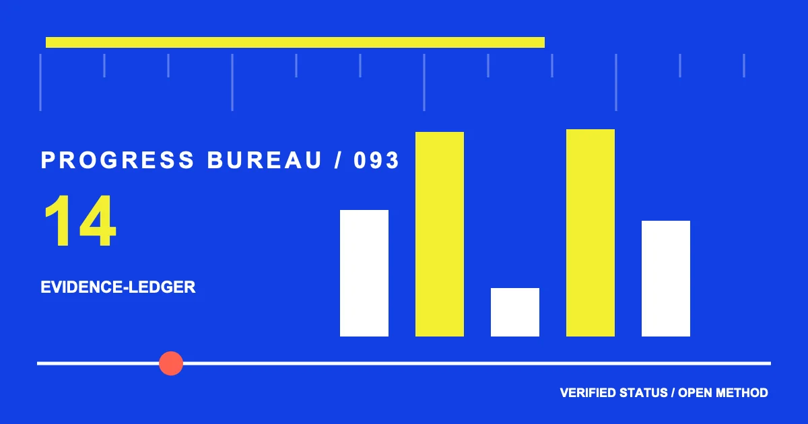

ACCEPTED DESK / %%READ_TIME%%
%%ARTICLE_TITLE%%
%%ARTICLE_ACCENT%%
%%ARTICLE_LEAD%%

STATUS / 可换字段
%%SECTION_1_TITLE%%
%%SECTION_1_BODY%%
EVIDENCE / 可换字段
%%SECTION_2_TITLE%%
%%SECTION_2_BODY%%
BOUNDARY / 可换字段
%%SECTION_3_TITLE%%
%%SECTION_3_BODY%%
HANDOFF / 可换字段
%%SECTION_4_TITLE%%
%%SECTION_4_BODY%%
%%FAQ_1_QUESTION%%
%%FAQ_1_ANSWER%%
%%FAQ_2_QUESTION%%
%%FAQ_2_ANSWER%%